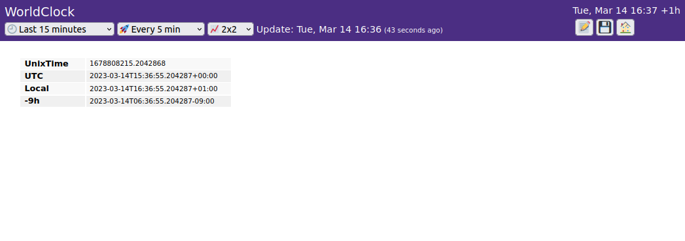
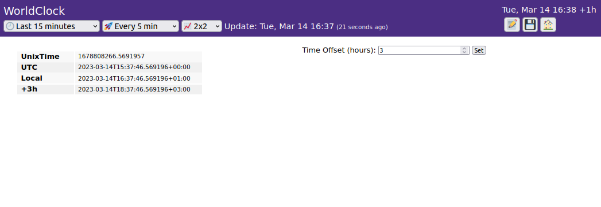

In Slow-Dash projects, user Python module can be used for:
SlowTask is an extension of the user module, and it should be good for most simple cases. User module is provided for full flexibility beyond SlowTask.
slowdash_project:
name: ...
module:
file: FILE_PATH
parameters:
KEY1: VALUE1
...
data_suffix: SUFFIX
enabled_for_cgi: false
enabled_for_commandline: true[TODO] implement SUFFIX
By default, user modules are not enabled if the server program is
launched by CGI. To enable this, set the enabled_for_cgi
parameter true. Be careful for all the side effects,
including performance overhead and security issues. As multiple user
modules can be loaded in parallel, splitting user functions to a
CGI-enabled module and disabled one might be a good strategy.
slowdash_project:
name: ...
module:
file: ./mymodule.pymymodule.py at the user project directory will be
loaded to slow-dash.mymodule.py will be called for
various context.### Called when this module is loaded. The params are the parameters in the configuration file.
def _initialize(params):
...
### Called during termination of slow-dash.
def _finalize():
...
### Called when web clients need a list of available channels.
# Return a list of channel struct, e.g., [ { "name": NAME1, "type": TYPE1 }, ... ]
def _get_channels():
...
return []
### Called when web clients request data.
# If the channel is not known, return None
# else return a JSON object of the data, in the format described in the Data Model document.
def _get_data(channel):
...
return None
### Called when web clients send a command.
# If command is not recognized, return None
# elif command is executed successfully, return True
# else return False or { "status": "error", "message": ... }
def _process_command(doc):
...
return None
### Called periodically while the system is running
# If this function is defined, a dedicated thread is created for that.
# Do not forget to insert a sleep otherwise the system load becomes unnecessarily large.
def _loop():
...
time.sleep(0.1)
### Instead of loop(), a lower level implementation with run() and halt() can also be used.
# run() is called as a thread after initialize(), and halt() is called before finalize().
is_stop_requested = False
def _run():
global is_stop_requested
while not is_stop_requested:
....
time.sleep(0.1)
def _halt():
global is_stop_requested
is_stop_requested = True[TODO] implement the full data-source interface
slowdash_project:
name: WorldClock
module:
file: worldclock.py
parameters:
timeoffset: -9
data_suffix: worldclock# worldclock.py
import time, datetime
timeoffset = 0
def _initialize(params):
global timeoffset
timeoffset = params.get('timeoffset', 0)
def _get_channels():
return [
{'name': 'WorldClock', 'type': 'tree'},
]
def _get_data(channel):
if channel == 'WorldClock':
t = time.time()
dt = datetime.datetime.fromtimestamp(t)
return { 'tree': {
'UnixWorldClock': t,
'UTC': dt.astimezone(datetime.timezone.utc).isoformat(),
'Local': dt.astimezone().isoformat(),
'%+dh'%timeoffset: dt.astimezone(tz).isoformat()
}}
return None
# for testing
if __name__ == '__main__':
print(_get_data(_get_channels()[0]['name']))Running the slowdash command without a port number
option shows the query result to screen. The query string is given as
the first argument.
Two queries are useful to test the module:
channel: query for a channel listdata/CHANNEL: query for data for the channel$ slowdash channels
[{ "name": "WorldClock", "type": "tree" }]
$ slowdash data/WorldClock --indent=4
{
"WorldClock": {
"start": 1678801863.0,
"length": 3600.0,
"t": 1678805463.0,
"x": {
"tree": {
"UnixTime": 1678805463.7652955,
"UTC": "2023-03-14T14:51:03.765296+00:00",
"Local": "2023-03-14T15:51:03.765296+01:00",
"-9h": "2023-03-14T05:51:03.765296-09:00"
}
}
}
}
To the example user data source above, add the following function:
def _process_command(doc):
global timeoffset
try:
if doc.get('set_time_offset', False):
timeoffset = int(doc.get('time_offset', None))
return True
except Exception as e:
return { "status": "error", "message": str(e) }
return FalseMake a HTML form to send commands from Web browser:
<form>
Time Offset (hours): <input type="number" name="time_offset" value="0">
<input type="submit" name="set_time_offset" value="Set">
</form>Save the file at the config directory under the user
project direcotry. Add a new HTML panel with HTML file
WorldClock.

When the Set button is clicked, the form data is sent to
the user module as a JSON document. On the terminal screen where the
slowdash command is running, you can see a message like:
23-03-14 16:37:46 INFO: DISPATCH: {'set_time_offset': True, 'time_offset': '3'}A dedicated thread is created for each user module, and the module is
loaded within the thread. Therefore, all the statements outside a
function will be executed in this thread at the time of module loading,
followed by _initialize().
If the _loop() function is defined in a user module, the
function is called periodically within the user module thread:
def _loop():
do_my_task()
time.sleep(0.1)If the _run() function is defined, a dedicated thread is
created and the function will be started immediately after
_initialize(). When _run() is used, a
terminator function, _halt() should also be defined in the
user module to stop the thread. The _halt() function is
called just before _finalize(). A typical construction of
_run() and _halt() looks like:
is_stop_requested = False
def _run():
global is_stop_requested
while not is_stop_requested:
do_my_task()
time.sleep(0.1)
def _halt():
global is_stop_requested
is_stop_requested = True If both _run() and loop() are defined,
run() is called first (after _initialize()),
followed by loop() and finalize().
All the other callback functions, such as
_process_command(), _get_channels(), and
_get_data(), are called from the main Slowdash thread (not
the user module thread) and therefore these can be called concurrently
with the user thread callbacks (_initialize(),
_loop(), _run(), etc.). It is okay to start
another thread in user modules, as done in SlowTask which creates a
dedicated thread for each _process_command() call.
To print debug messages from user modules, use the logging module.
Direct outputs to logging will be included into SlowDash
logging. If you do not want this, define a own logger object:
import logging
logger = logging.getLogger(name)
logger.addHandler(logging.StreamHandler(sys.stderr))
logger.setLevel(logging.INFO)
def _process_command(doc):
logger.info(doc)
...To avoid using a number of “global” variables, consider making a class to handle user tasks and using the user module interface functions for simply forwarding the messages.
class MyTask:
....
my_task = MyTask()
def _loop():
my_task.do()
time.sleep(0.1)
def _process_command(doc):
return my_task.process_command(doc) It is often convenient to have the user module executable standalone.
if __name__ == '__main__':
_initialize({})
for i in range(10):
_loop()
_finalize()For continuous execution, signal might be used to stop the thread:
def stop(signum, frame):
_halt()
if __name__ == '__main__':
import signal
signal.signal(signal.SIGINT, stop)
_initialize({})
_run()
_finalize()User Module functions can be either the standard (def)
or async (async def). As User Module functions are executed
in a dedicated thread, using await in async
will not improve the overall performance much, but this allows users to
use async services as described below.
To access services implemented in the SlowDash App, such as invoking
Web API and publishing streaming data, the instance of the SlowDash App
can be passed to User Module if it defines the _setup(app)
function:
import asyncio
slowdash = None
def _setup(app):
global slowdash
slowdash = app
async def _loop():
await slowdash.request_publish(topic='user_news', 'I am still alive')
asyncio.sleep(1)If defined, _setup(app) is called before
_initialize(params). Optionally, _setup() can
take the second argument, params, which is identical to the
argument passed to _initialize().
Note that most SlowDash App services are async, and these must be
called with await in a async user function (or
handle the return values properly, e.g., with
asyncio.gather()).
SlowDash uses the Slowlette Web framework, described in the Web Sever section, to handle Web API requests. If a Slowlette App instance is defined in a User Module, it will be integrated into the SlowDash Web API. This feature can be used to add new API, modify or override the existing API, using Slowlette’s response aggregation mechanism. Be extremely careful on using this because modifying API can easily screw up the entire SlowDash behavior.
The examples here can be found in
ExampleProjects/UserModuleSlowlette.
Here is an example for enabling User Module to respond to data
requests with a time-range parameter. (Note that
_get_data() callback cannot do this, as it is designed to
return “current” data.)
import slowlette
webapi = slowlette.Slowlette()
@webapi.get('/channels')
def get_channels():
return [ { 'name': 'data_query', 'type': 'tree' } ]
@webapi.get('/data/{channels}')
def get_data(channels:str, length:float=None, to:float=None, resample:float=None, reducer:str=None):
if 'data_query' not in channels.split(','):
return None
record = { "data_query": { "x": {
'tree': {
'channels': channels,
'length': length,
'to': to,
'resample': resample,
'reducer': reducer,
}
}}}
return recordDirectly handling the Web API allows User Module to do anything for
the request. Slowlette will distribute a web request to all the possible
(matching) handlers in the system, and aggregate the multiple responses.
The handler for /channel above returns only one channel,
but the client (web browser) will receive the entire list of channels
due to this aggregation mechanism.
Here is another example, for overriding SlowDash API more
aggressively. In this example, the handler for
/config/contentlist (a request to return a list of project
config directory contents) inserts a slowplot file entry,
slowplot-PlotLayoutOverride.json, which actually does not
exist. Then the handler for the content request
(/config/content/FIELNAME) returns a dynamically generated
content (time-series plots for all the channels, where the channel list
is obtained from the SlowDash App in _setup()), as if the
file existed in the config directory with that content.
import slowlette
webapi = slowlette.Slowlette()
channels = []
async def _setup(slowdash):
global channels
channels = await slowdash.request_channels()
@webapi.get('/config/contentlist')
def add_slowplot_PlotLayoutOverride():
return [{
"type": "slowplot",
"name": "PlotLayoutOverride",
"config_file": "slowplot-PlotLayoutOverride.json",
"description": "Dynamically generated by UserModule"
}]
@webapi.get('/config/content/slowplot-PlotLayoutOverride.json')
def generate_slowplot_PlotLayoutOverride(request:slowlette.Request):
request.abort() # stop propagation, in order not to be handled by SlowDash
layout = {
"panels": [{
"type": "timeaxis",
"plots": [{ "type": "timeseries", "channel": ch['name'] }]
} for ch in channels if ch.get('type', 'numeric') == 'numeric' ]
}
return layout